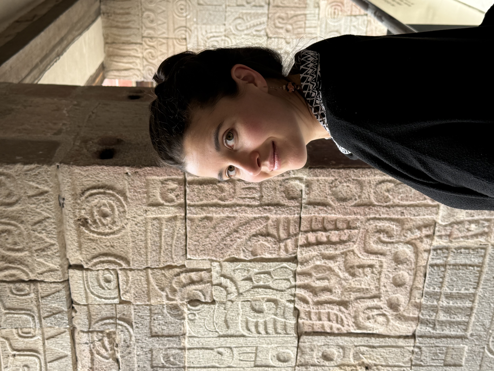

Je m'appelle Marie Vialaret. Je suis statisticienne et conférencière spécialisée dans les questions d'inégalites de genre. Je suis basée principalement en France.
Diplômée de la Toulouse School of Economics, j'ai ensuite étudié les statistiques appliquées à l'ENSAE ParisTech.
